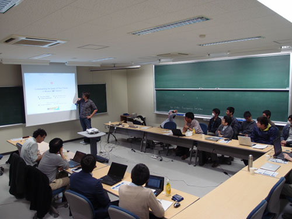
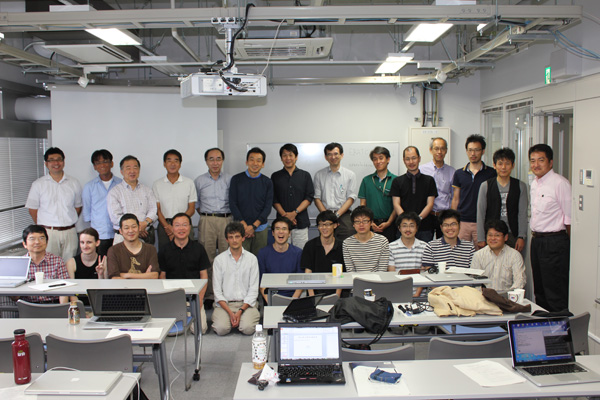
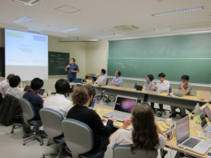
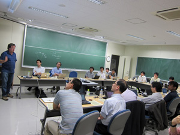

| English | Japanese | CSPSAT (until FY2011) |
|
| News | About Project | Seminars & Meetings |
Publications & Softwares |
News
| 2014.12.11 | The 8th CSPSAT Seminar will be held on 23-24 of March 2015. |
| 2014.12.10 | Takehide Soh receives Takahashi Award for the best presentation and paper | 2014.8.28 | Our numberlink solver using Sugar and GlueMiniSat won the 1st prize in the Algorith Design Contest held as a part of Design Automation (DA) Symposium 2014. |
| 2014.7.21 | The 5th CSPSAT2 Meeting will be held on 21-22 of August 2014. |
| 2014.4.22-23 | Seventh CSPSAT Seminar was held on April 22-23, 2014. The invited speaker is Prof. Lauren Simon, the developper of award winning SAT solver Glucose. |
 |
|
| Picture from 7th CSPSAT Seminar | |
| 2014.3.20 |
The following paper, by Prof. Nabeshima and Prof. Inoue (CSPSAT2 Members) and Prof. Iwanuma, receives the Software
Paper Award of JSSST (Japan Society for Software Science and Technology). GlueMiniSat 2.2.5: A Fast SAT Solver with An Aggressive Acquiring Strategy of Glue Clauses. Hidetomo Nabeshima, Koji Iwanuma, and Katsumi Inoue. Computer Software, Vol.29, No.4, pp.146-160, 2012. 10.11309/jssst.29.4_146 |
| 2014.3.7 | An organized session "Theory, Practice, and Application of SAT" will be held at JSAI 2014 - The 28th Annual Conference of Japanese Society for Artificial Intelligence |
| 2014.2.26 | The 7th CSPSAT Seminar will be held on 22, 23 of April 2014. |
| 2014.2.13 |
The 4th CSPSAT2 Meeting (joint with The
NII Grand Challenge "Inference and Learning on Dynamic Constraint
Networks" and NII Collaborative Research) will be held on 13-16th of March 2014. |
| 2013.7.12 | GlueMiniSat (by Prof. Nabeshima) won the 2nd prize on SAT Competition 2013 (Application, Certified UNSAT). |
| 2013.7.12 | QMaxSAT won the 2nd prize on MaxSAT Evaluation 2013 (Partial MaxSAT Industrial). QMaxSAT is developed by Prof. Koshimura (Hasegawa Laboratory, Kyushu University), who was a core memeber of CSPSAT project. |
| 2013.7.24-26 |
Joint Seminar on Theory, Implementation, and Applications of
Logic and Inference and The 3rd CSPSAT2 Meeting was held in Hokkaido University. |
 |
|
| Picture from Joint Seminar on Theory, Implementation, and Applications of Logic and Inference |
|
| 2013.7.8-12 | SAT 2013 conference was held on July 8-12, 2013 at Helsinki, Finland. |
| 2013.3.17 | Prof. Fujita (Hasegawa Laboratory, Kyushu University), who was a core memeber of CSPSAT project, updated the lower bound of Ramsey Number R(4,8) to 58 by using SAT technology (web page, arXiv:1212.1328). |
| 2013.1.17 | Information of The 2nd CSPSAT2 Meeting (2013.3.14 - 15) is available now (in Japanese). |
| 2012.12.20 | An organized session "Theory, Practice, and Application of SAT" is accepted to JSAI 2013 - The 27th Annual Conference of Japanese Society for Artificial Intelligence |
| 2012.12.3 | Prof. Nabeshima is selected for an invited speaker of The 15th JSSST Workshop on Programming and Programming Languages (PPL2013)! |
| 2012.11.21-23 | The CRIL-NII Collaborative Meeting on Reasoning about Dynamic Constraint Networks |
| 2012.11.19-20 | The 4th JFLI-LRI-NII Workshop on Consequence Finding and Satisfiability Testing in Distributed Environments and Systems Biology |
| 2012.9.28 | Information of Fifth CSPSAT & ASP Seminar (2012.10.11 - 12) is available now. |
| 2012.7.12-13 | Information of Joint Meeting of the 1st CSPSAT2 Meeting and NII Collaborative Research Projects is available now. |
| 2012.4.17 | The project web page is renewed with the start of CSPSAT2! |
| 2012.4.16 | Information of Fourth CSPSAT & ASP Seminar is available now. |
 |
 |
| Pictures from Fourth CSPSAT & ASP Seminar (May 21st - 22nd) | |
Past Seminars (until FY2011)
 |
Tamura Lab.T. Soh |